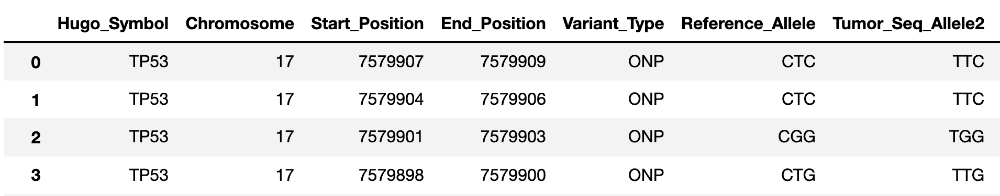

🚀 Quickstart¶
Installation¶
PEGG is available through the python package index. To install, use pip:
pip install pegg
Required Input Files¶
In order to use PEGG, you need at minimum 2 input files:
A dataframe containing a list of input mutations
A reference genome to work from.
An optional, but highly reccomended input file for use with the reference genome build GrCh37 is:
chrom_dict, which provides on/off target scores for each protospacer occuring in exonic regions of GrCh37.
Reference files for (2) and (3), as well as a sample mutation dataset (1), are available at the following link:
Reference File Formatting¶
PEGG requires that the reference files are in a specific format. This should be the only painful part of setting up your environment to allow PEGG to generate pegRNAs.
(1) Input mutations¶
First let’s load in a dataframe containing a list of input mutations (1):
import pegg
import pandas as pd
import gzip
from Bio import SeqIO
#pandas, gzip, and Bio.SeqIO are required for parsing the reference files
#they can be easily downloaded using 'pip install _____'
#------(1) loading in input mutatations-------------
filepath = '.../2020-06-16-MSK-IMPACT_EDITED.txt'
mutant_input = pd.read_csv(filepath, sep='\t')
The above codeblock shows how to load in the sample mutation input file available in the dropbox of reference files. To use your own mutation input, the input mutations follow the format shown in the dataframe below:
Namely, 7 columns are required, providing information about the input mutations relative to the provided reference genome. The input mutation dataframe must match the column naming scheme shown above:
Hugo_Symbol: the name of the gene within which the mutations falls. For non-coding locations, include some identifer.
Chromosome: which chromosome the mutation falls in. Use integers or ‘X’ and ‘Y’.
Start_Position: start position of mutation in the reference genome (mutations should only be reported on the + strand)
End_Position: end position of mutation in the reference genome
Variant_Type: what type of mutation is it. Options: “SNP”, “ONP”, “INS”, “DEL”
Reference_Allele: what is the reference allele. For insertions, this can be set to “-“.
Tumor_Seq_Allele2: what is the mutant allele (i.e. what is the mutation sequence). For deletions, this can be set to “-“.
(2) Reference Genome¶
And now let’s load in the reference genome. I suggest using the codeblock below if you’re using GrCh37 as a reference file. Otherwise, the format needs to be as follows:
records = a list containing the chromosome sequences (preferably parsed by SeqIO).
index_list = a list containing the indeces in records corresponding to chromosome 1-22, and chrX and chrY.
For example, records[index_list[0]] should refer to chromosome 1 (numbering starts at 0, not 1 in index_list due to python conventions)
And records[index_list[1]] should refer to chromosome 2, etc.
For the X and Y chromosome, records[index_list[22]] should refer to chrX, and records[index_list[23]] should refer to chrY
In other words, records is a list containing the chromosome sequences, but likely also other unwanted sequences (alternate/unlocalized sequences), while index_list provides the indeces needed to place the chromosome sequences in records in order from chromosome 1-22, and chrX and chrY.
An alternate way to format these input files is to have records list have the chromosome sequences in order from 1-22, chrX, and chrY, and set index_list = list(range(24))
See the following codeblock for how to set up records and index_list using the provided reference genome file, GrCh37.
#------(2) loading in reference genome GrCh37-------------
file = '.../GRCh37/ncbi-genomes-2022-03-17/GCF_000001405.25_GRCh37.p13_genomic.fna.gz'
#using gzip to load in the file...
with gzip.open(file, "rt") as handle:
records = list(SeqIO.parse(handle, "fasta")) #about 4 Gb in memory
#records = list that contains sequences split up by chromosome
#filtering out alternative sequences to only select consensus chromosome sequences
wrong = ["alternate", "unplaced", "unlocalized", "patch"]
badlist = []
for key in wrong:
for i in records:
ii = i.description
if key in ii:
badlist.append(ii)
#creating an index for
index_list = []
for idx, i in enumerate(records):
ii = i.description
if ii not in badlist:
index_list.append(idx)
(3) On/Off Target scores¶
The last reference file (3) is chrom_dict, which provides on/off target scores for protospacers in exonic regions of GrCh37. These scores are used in the ranking and filtration of pegRNAs. Curently this is only available for GrCh37, but a chrom_dict reference file for GrCh38 will be provided shortly and available in the dropbox of reference files.
To import this reference file, use the following syntax:
#---------loading in on/off-target efficiencies of sgRNAs in exonic regions of GrCh37---------------------
file = '.../chrom_dict.pickle'
chrom_dict = pd.read_pickle(file)
If you are using an alternative genome, or don’t wish to use chrom_dict, set it equal to ‘none’:
chrom_dict = 'none'
Using PEGG¶
Now that our reference files are loaded in, and PEGG is imported as a module, using PEGG is simple.
#specify which mutations within mutant_input to generate pegRNAs for
#here we're going to just generate pegRNAs for 2 mutations, corresponding to row 422804 and row 16 of mutant_input
mut_idx_list = [422804, 16] #alternatively, we can generate pegRNAs for the entire dataset = list(range(len(mutant_input)))
PAM = 'NGG' #specify PAM sequence
guides_per_mut = 5 #specify how many pegRNAs to return for each mutation
RTT_lengths = [20,25,30] #specify RTT lengths and PBS lengths to generate pegRNAs for
PBS_lengths = [5,7,10]
minus_seqs = pegg.minus_seq_generator(records, index_list)
#now generating the pegRNAs
ranked_filtered_output = pegg.run(mutant_input, mut_idx_list, records, index_list, minus_seqs, chrom_dict, PAM, RTT_lengths, PBS_lengths, guides_per_mut)
Jupyter Notebook Tutorial¶
A jupyter notebook version of the PEGG tutorial can be accessed at the following link:
A Note on RAM¶
Importing a reference genome into the local environment requires ~4 Gb of RAM. Chrom_dict is also a large file. It’s reccomended to use a machine with at least 16 Gb of RAM, though more is preferable, when running pegg.